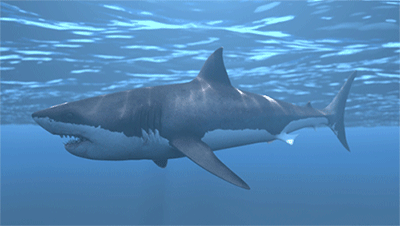
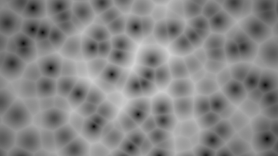

使用单元噪波创建焦散效果：鲨鱼场景

cell_noise 着色器用途广泛，能够创建各种不同的着色效果。在本简短教程中，我们将介绍如何使用 spot_light 以及连接到 gobo 灯光过滤器的 cell_noise 着色器创建焦散效果。非常感谢 Slava Sych 为本教程提供的帮助。
要下载对应的教程场景文件，请单击此处。
Gobo -> 聚光灯
- 首先，创建一个平面。我们将使用 spot_light 通过 gobo 对 cell_noise 着色器进行投影。
- 创建一个 spot_light*，并使其朝向平面。增加 *spot_light 的“曝光”(exposure)。
- 将 gobo 灯光过滤器连接到 spot_light。
- 将 cell_noise 着色器连接到 gobo 的“混合”(Blend)属性。
单元噪波
- 将 cell_noise 图案更改为 Worley 1。
- 增加 cell_noise 缩放比例。在本例中，XYZ 中使用 20。
- 将 coord_space 更改为 UV。这将使用对象的局部 UV 坐标，在本例中这看上去更能达到我们的预期效果。
|
|  |
| cell_noise 着色器使用 Worley 1 图案 |
范围着色器
我们可以使用范围*着色器以线性方式重映射 *cell_noise 着色器的输出，以创建类似焦散效果的场景。
- 在 cell_noise 着色器与 gobo 之间插入范围着色器。
- 在范围着色器中启用 smoothstep。
- 增大 input_min 属性，并注意其对 cell_noise 着色器的影响。
- 将 bias 减小到 0.01 左右。您应该会注意到，它现在看起来更像焦散效果。
- 返回到 cell_noise 着色器，并对“时间”(time)属性设置关键帧。这时应该会看到类似焦散图案的效果！